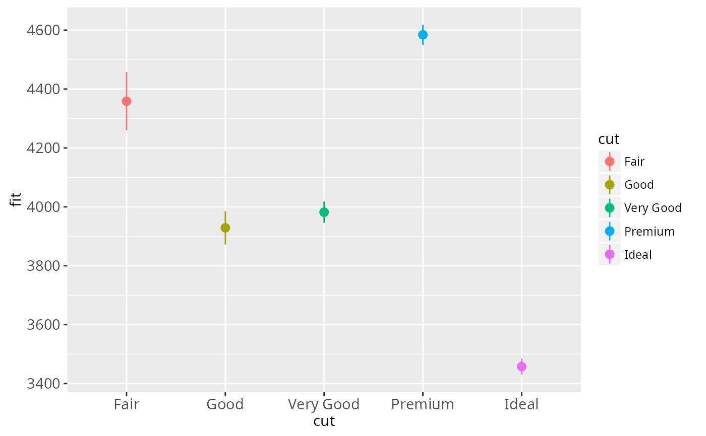
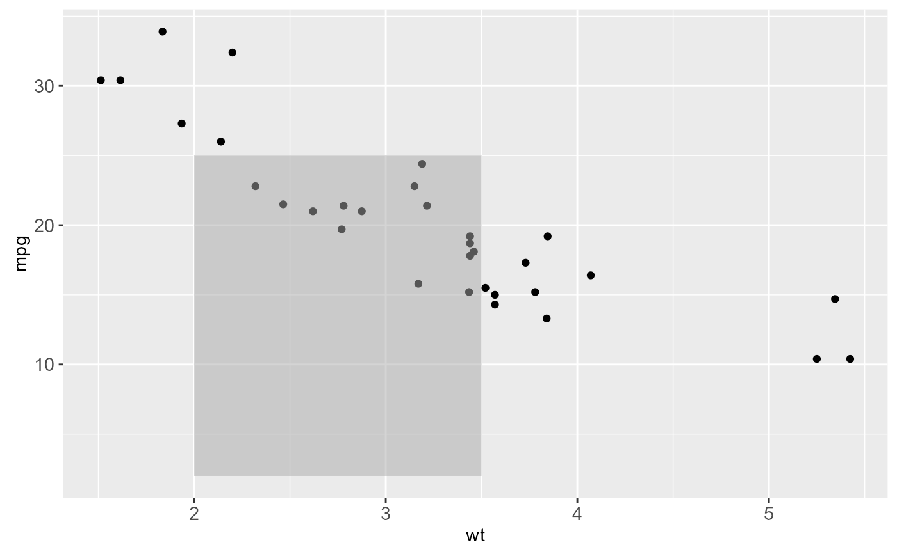
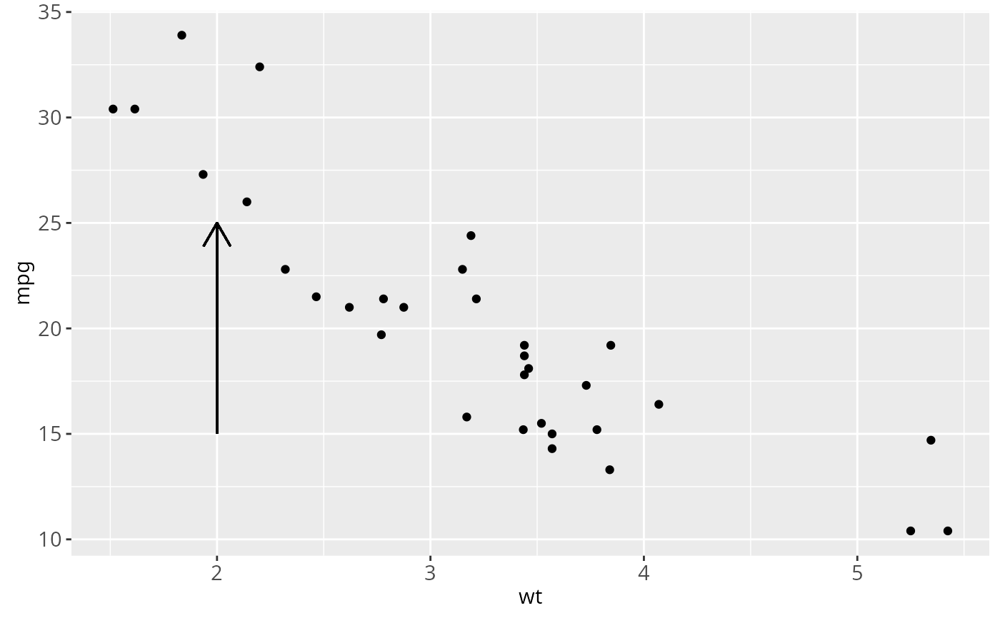
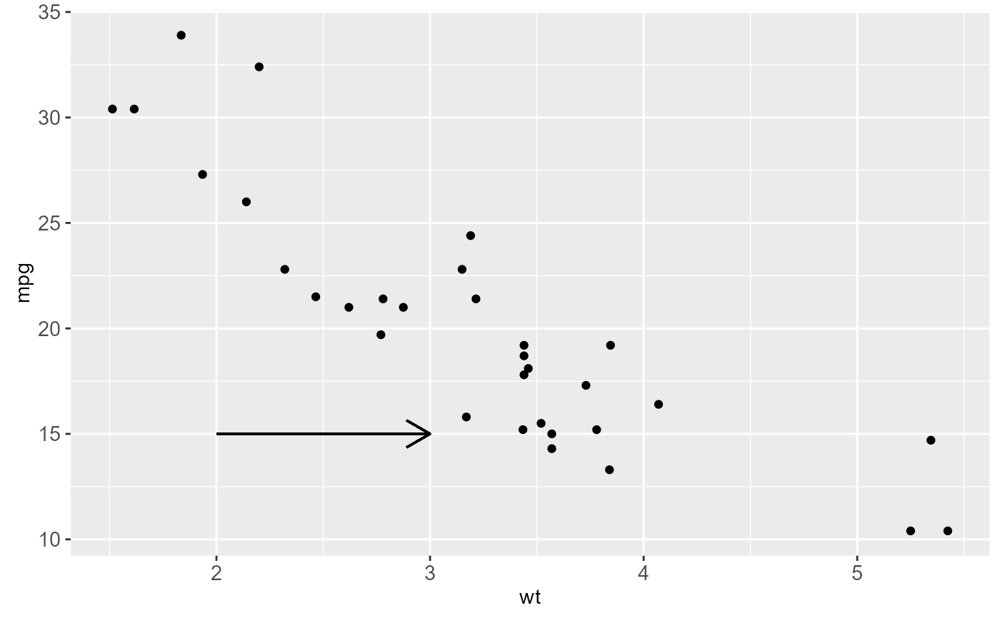
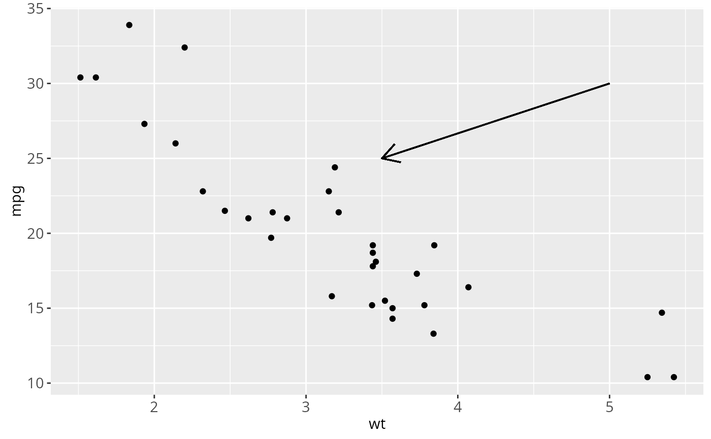
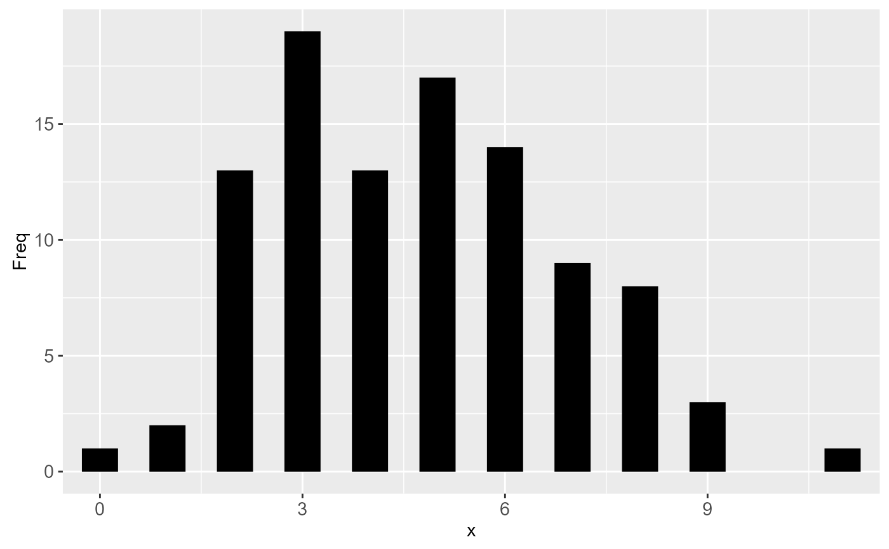

Position related aesthetics: x, y, xmin, xmax, ymin, ymax, xend, yend
Source:R/aes-position.r
aes_position.RdThis page demonstrates the usage of a sub-group of aesthetics; x, y, xmin, xmax, ymin, ymax, xend, and yend.
Examples
# Generate data: means and standard errors of means for prices
# for each type of cut
dmod <- lm(price ~ cut, data = diamonds)
cuts <- data.frame(cut = unique(diamonds$cut), predict(dmod, data.frame(cut =
unique(diamonds$cut)), se = TRUE)[c("fit", "se.fit")])
se <- ggplot(cuts, aes(x = cut, y = fit, ymin = fit - se.fit,
ymax = fit + se.fit, colour = cut))
se + geom_pointrange()

# Using annotate
p <- ggplot(mtcars, aes(wt, mpg)) + geom_point()
p + annotate("rect", xmin = 2, xmax = 3.5, ymin = 2, ymax = 25,
fill = "dark grey", alpha = .5)

# Geom_segment examples
p + geom_segment(aes(x = 2, y = 15, xend = 2, yend = 25),
arrow = arrow(length = unit(0.5, "cm")))

p + geom_segment(aes(x = 2, y = 15, xend = 3, yend = 15),
arrow = arrow(length = unit(0.5, "cm")))

p + geom_segment(aes(x = 5, y = 30, xend = 3.5, yend = 25),
arrow = arrow(length = unit(0.5, "cm")))

# You can also use geom_segment to recreate plot(type = "h") :
counts <- as.data.frame(table(x = rpois(100, 5)))
counts$x <- as.numeric(as.character(counts$x))
with(counts, plot(x, Freq, type = "h", lwd = 10))
ggplot(counts, aes(x, Freq)) +
geom_segment(aes(yend = 0, xend = x), size = 10)
